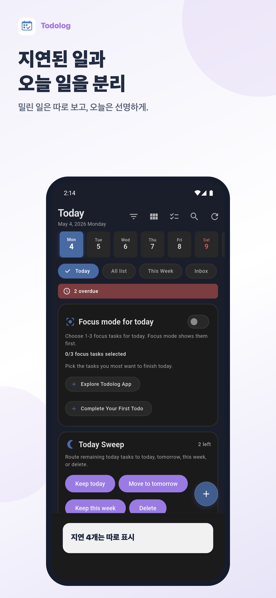
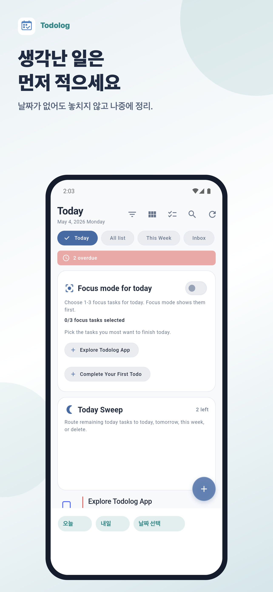
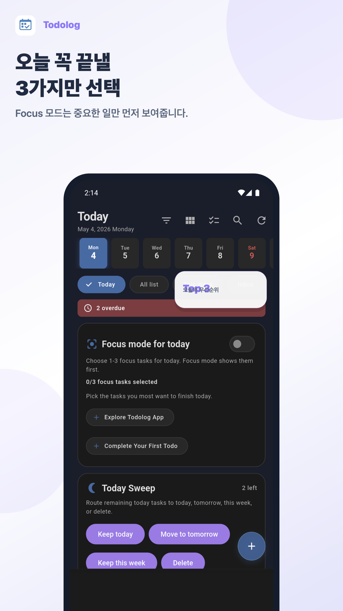
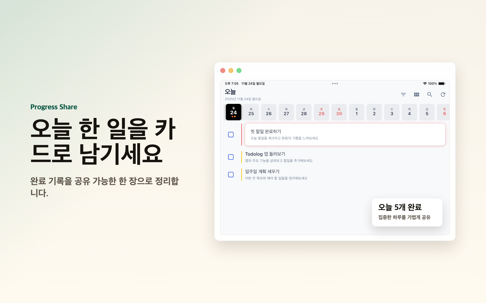

iOS · Android · macOS
밀린 할 일을 오늘 다시 시작하세요.
Todolog는 지연된 일, 인박스, 오늘 할 일을 분리해서 보여주고 지금 할 수 있는 다음 행동으로 돌아오게 돕습니다.

Overdue 정리
밀린 일을 오늘과 분리합니다.
Inbox 계획
적어둔 일을 오늘 계획으로 바꿉니다.
Today Briefing
앱을 열면 먼저 볼 일을 보여줍니다.
Today-first
할 일 목록보다 오늘 할 일을 먼저 봅니다.
모든 일을 한 화면에 쌓아두면 시작이 늦어집니다. Todolog는 오늘 처리할 일과 나중에 정리할 일을 나눠서, 다시 시작할 수 있는 흐름을 만듭니다.


Across devices
폰에서 적고, Mac에서 계속 이어갑니다.
모바일에서는 빠르게 기록하고, 데스크톱에서는 키보드와 넓은 화면으로 오늘 해야 할 일을 곁에 둡니다.

Download